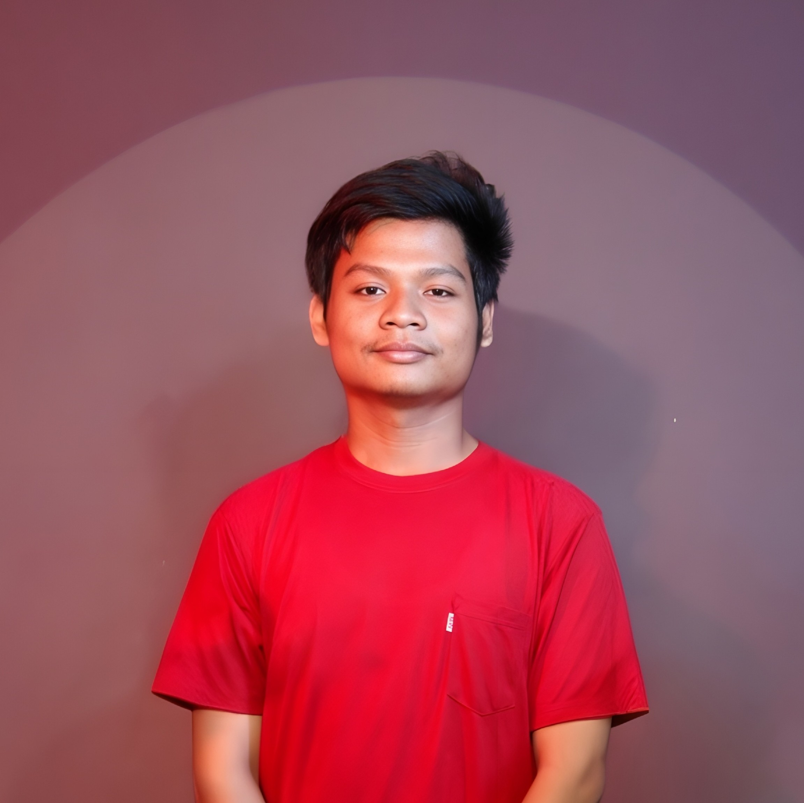

Kuliah (Sekarang)
PPKN student / Android tinkerer / web learner
Halo, saya Jovallin Keisha Rafael Dewantara.
Saya mahasiswa Pendidikan Pancasila dan Kewarganegaraan di Universitas Negeri Surabaya yang bercita-cita menjadi guru PKN. Di sisi lain, saya juga tertarik pada dunia IT, terutama pengembangan Android, software, dan project kecil yang saya bangun lewat proses belajar mandiri, eksplorasi, serta bantuan AI melalui vibecode.

Tentang
Saya bukan programmer yang sudah dalam banget. Saya hanya tahu sedikit tentang koding, tapi cukup penasaran untuk mencoba sampai sebuah ide kecil bisa jalan dan terasa enak dipakai.
Saya adalah mahasiswa Universitas Negeri Surabaya (UNESA) dengan jurusan Pendidikan Pancasila dan Kewarganegaraan. Sebelumnya, saya merupakan lulusan jurusan IPA dari SMA Negeri Ngoro.
Saya memiliki keinginan untuk menjadi guru PKN, sekaligus mempunyai ketertarikan di bidang IT, terutama software dan pengembangan Android seperti kernel, ROM, dan hal-hal lain yang berhubungan dengan sistem. Dari sana saya belajar memahami teknologi secara bertahap lewat proses mencoba, mengamati, dan memperbaiki.
Skill
Skill saya masih terus bertumbuh. Daftar ini lebih jujur sebagai area yang sering saya pakai dan pelajari, bukan klaim sudah mahir semuanya.
HTML
CSS
JavaScript dasar
Python dasar
Git & GitHub
WebUI Magisk
Android modding
Linux customization
Reverse engineering dasar
Belajar mandiri
Troubleshooting
Manajemen waktu
Adaptasi teknologi
Kerja tim
Riwayat Pendidikan
Bagian ini merangkum perjalanan pendidikan saya dari jenjang awal sampai kuliah saat ini, disusun dari tingkat pendidikan tertinggi.
SMA
Sekolah Menengah Atas Negeri Ngoro Jombang
SMP
Sekolah Menengah Pertama Negeri 1 Ngoro Jombang
SD
Sekolah Dasar Negeri Kauman 1 Jombang
SD
Sekolah Dasar Negeri Klegen 1 Madiun
TK
TK Yayasan Wanita Kereta Api
PAUD
Paud Wijaya Kusuma
Riwayat Pekerjaan
Pengalaman ini berasal dari keterlibatan saya membantu usaha keluarga. Dari sana saya belajar tanggung jawab, pelayanan, dan kebiasaan bekerja secara langsung.
2013–2015
Toko kelontong milik orang tua
Membantu operasional toko kelontong milik orang tua.
2017–2020
Toko roti milik orang tua
Membantu operasional toko roti milik orang tua.
2023–2024
Kios ayam geprek milik orang tua
Membantu pengelolaan kios ayam geprek milik orang tua.
Riwayat Keaktifan
Beberapa kegiatan ini menjadi catatan proses saya dalam bekerja bersama tim, mengatur tugas, dan menyelesaikan project di luar kegiatan belajar utama.
2024
Tim editor utama video drama
Pernah menjadi tim editor utama dalam produksi video drama, bertanggung jawab dalam proses penyuntingan visual dan audio untuk menghasilkan video yang rapi dan menarik.
2025
Tim pembuatan scrapbook
Pernah menjadi pemimpin tim dalam pembuatan scrapbook untuk tugas akhir, mengoordinasi ide, desain, dan pembagian tugas agar hasil akhir sesuai target.
Project
Tidak semua project besar, tapi masing-masing punya cerita belajar sendiri. Saya sengaja menampilkan yang paling dekat dengan minat saya sekarang.
Desktop App
Buka repository
KeiYomi
Project open-source yang berawal dari ide sederhana, lalu saya wujudkan dengan bantuan AI melalui proses vibecode. Dari project ini saya belajar menyusun fitur, merapikan tampilan, dan memahami alur pengembangan aplikasi secara bertahap.
Android Tools
Buka repository
Realme C21Y Debloat Tools
Project sederhana berbasis Python yang sebagian besar saya kerjakan sendiri. Saat membuatnya, saya banyak mengotak-atik langsung karena bantuan AI waktu itu terbatas oleh token, jadi saya belajar memahami alur script-nya pelan-pelan.
Module Magisk
Buka repository
Universal Buildprop Tweak
Project yang saya kembangkan dengan menggabungkan beberapa build.prop tweak untuk membantu melancarkan performa Android. Project ini saya buat karena saya juga aktif sebagai salah satu admin di grup device Telegram.
Kontak
Untuk ngobrol soal project, kolaborasi kecil, atau sekadar bertukar catatan belajar, saya paling mudah dihubungi lewat email dan GitHub.